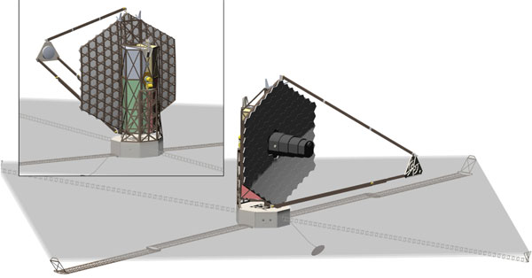

Future Space Telescopes
HABEX: Hubble 2.0
Twice the size of the Hubble space telescope, nearly 4 meters, it is planned to detect near-infrared, visible, and ultraviolet light.
The most interesting part of this telescope wouldn't be the optics, but the solar starshade, sitting at a whopping 52 meters. The starshade
funcitons similar to the JWST, in that it would block most sunlight from our star from interfering with its optics. It would
be difficult to unfold the starshade with the craft itself, so it is planned to fly seperately and attatch itself in space as shown in
the example below. Although it should be mentioned that this would be incredibly complicated and we may be decades away from achieving this.
LUVOIR: Bigger and Broader
Like the JWST, the LUVOIR (Large UV/Optical/IR Surveyor) would orbit the Lagrange 2 point in space. However unlike the JWST, it is designed for
astronauts to be able to service it, which puts more relief on the designers of this machine. It's design is interesting in that it looks fairly
similar to the JWST, but with a much larger mirror and square shaped solar shield. It's basically JWST on steroids.

LYNX: X-Ray vision
It makes perfect sense that the LYNX, named after the feline, would be up for consideration as a future space telescope in that some of the most energetic processes in the
universe emmit X-rays. Earth's atmosphere blocks X-rays completely, so a space telescope that can see in X-ray is a must. Due to X-rays being able to pass through most
materials such as a standard mirror, the LYNX's mirrors would be layered with a special silicon composite material to be able to capture more X-rays to get a sharper image and
collect more data.
Origins Space Telescope: Answering The Big Questions
How did we get here? Well, I'm not sure, but hopefully someday that question could be answered by the Origins Space Telescope. Its entire mission would be dedicated to just that,
collecting data on stars in the universe that are almost 14.6 billion light years away. It would detect infrared light that is nearing the microwave part of the spectrum, which is
incredibly faint. This part of the spectrum is reletively unexplored, so any data that this telescope collects would be groundbreaking.